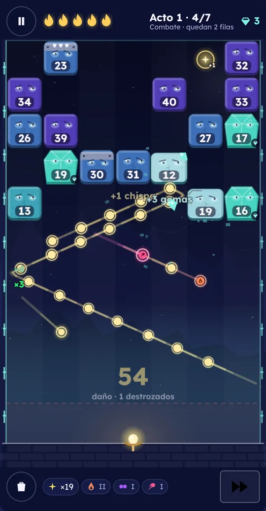
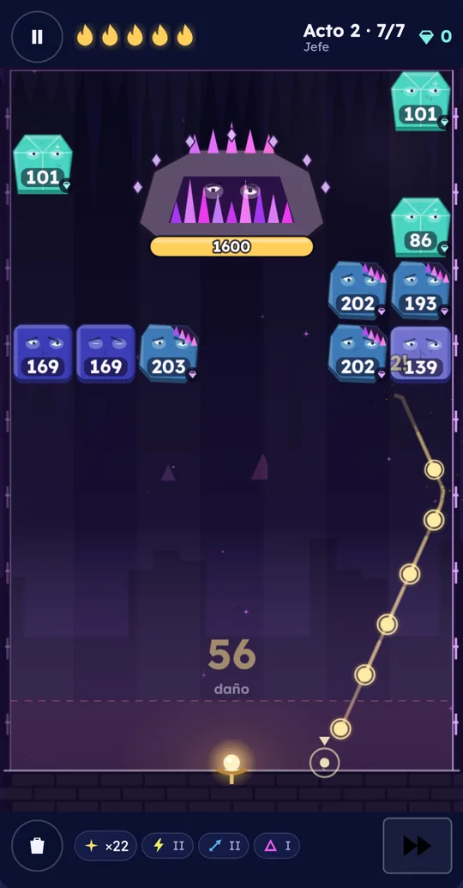
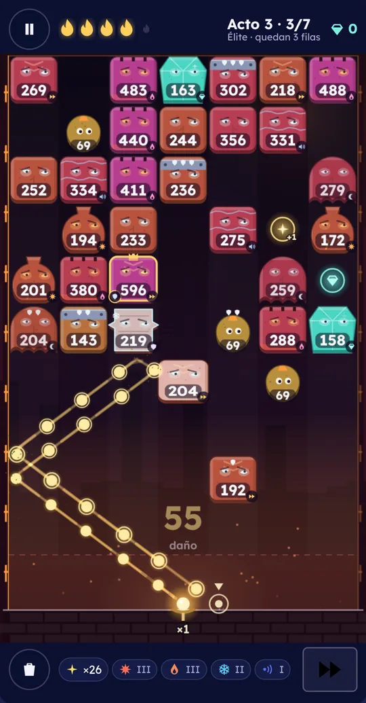
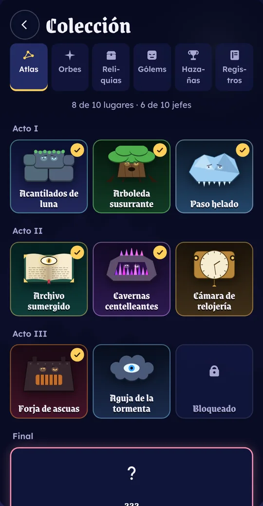
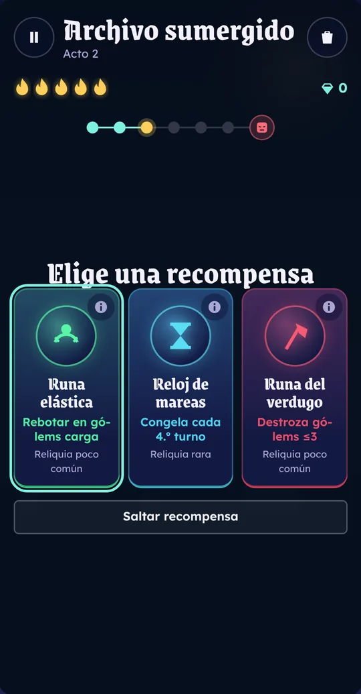

Caromancer
Cada rebote hace más fuerte tu hechizo.
Un roguelite por turnos que se juega con un pulgar. Arrastra para apuntar, suelta y mira cómo tus orbes rebotan entre una marea de gólems de piedra rúnica.

Cómo funciona un turno
Apunta
Arrastra en cualquier parte del tablero. La línea de puntería muestra dónde caen tus primeros rebotes.
Rebota
Cada rebote en una pared o en el techo suma una carambola: +50% de daño para ese orbe.
Destroza
Los gólems bajan tras cada andanada. Despeja el piso antes de que lleguen a tu linterna.
Diez lugares, diez jefes
Cada partida recorre tres actos elegidos entre diez lugares que se abren al vencer a sus guardianes. Cada lugar tiene sus gólems y su jefe: una Reina Geoda cuyo caparazón vuelve a crecer, un Relojero que rebobina el daño, una Estrella Hueca que se traga tu línea de puntería.




Combinaciones que se desmadran
Elige entre 14 orbes y 42 reliquias entre combates. Gemelos que se dividen, Voltios que encadenan rayos, Novas que estallan, Cometas que salen ya cargados: combínalos hasta que una sola andanada haga miles de daño.
Justo por diseño
- Sin energía, sin temporizadores, sin cajas de botín.
- Los anuncios solo se ven cuando tú eliges uno: para reavivar una partida o duplicar tu luz estelar.
- Todo lo que cambia el juego se gana jugando.
- Funciona totalmente sin conexión. Sin cuenta.
Mucho a lo que volver
Seis héroes, diez niveles de Eclipse, Grieta diaria, Desafío semanal, Carrera de jefes, seis Pruebas, modo Infinito, 39 hazañas, objetivos de maestría por héroe, códigos de semilla para compartir y 13 estilos de orbe. En English, Español, Português, Français, Deutsch y 日本語.